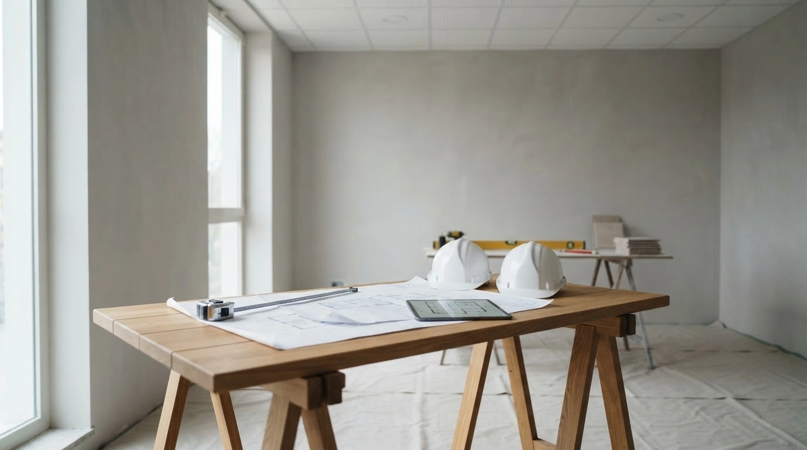
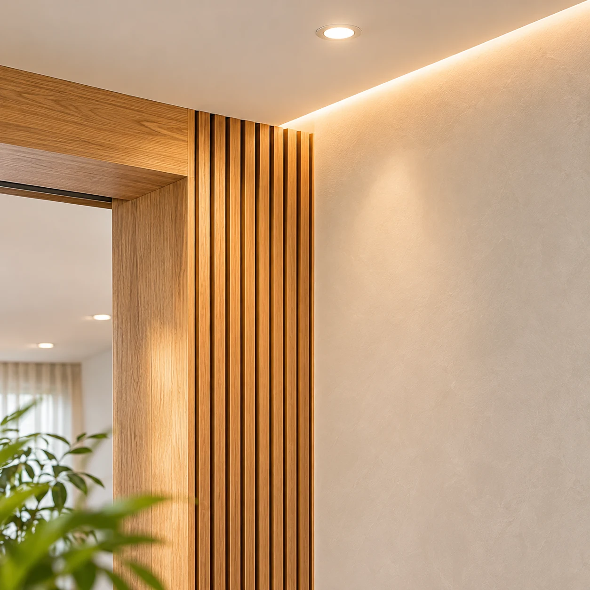

Chi siamo
Emmeci Costruzioni srl è un'impresa di ristrutturazioni e finiture di interni. Lavoriamo con un metodo semplice: ascoltare, pianificare per iscritto, eseguire con precisione e consegnare ciò che abbiamo promesso.
I nostri standard
- Un unico referente per tutta la durata dei lavori
- Preventivo e cronoprogramma scritti prima di iniziare
- Cantiere ordinato, protetto e sempre accessibile per i controlli
- Verifica finale insieme al cliente prima della consegna

Esecuzione strutturata
Ogni lavorazione ha un responsabile, una sequenza e un controllo. Così i tempi restano affidabili e il risultato coincide con ciò che hai approvato.
